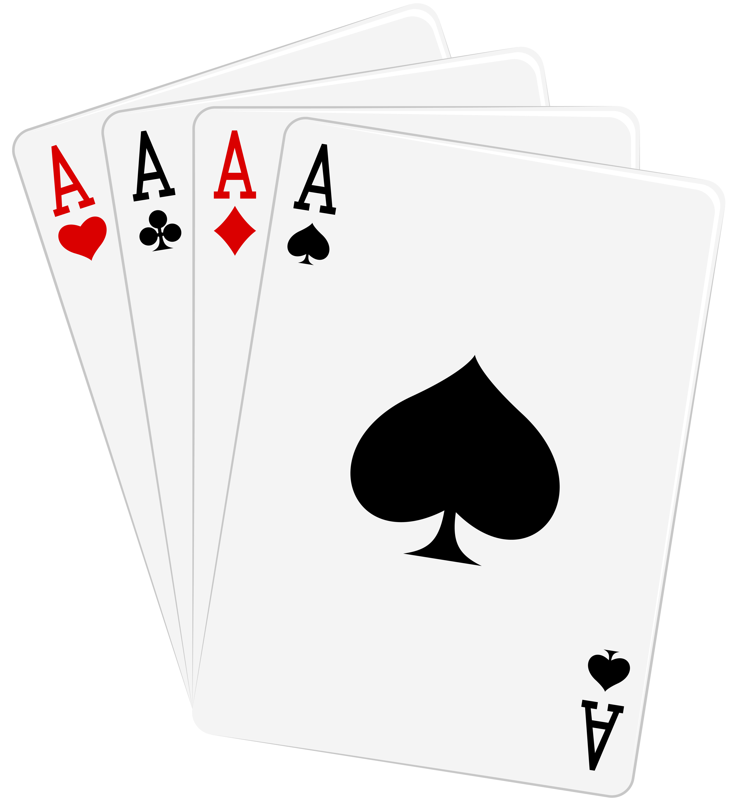
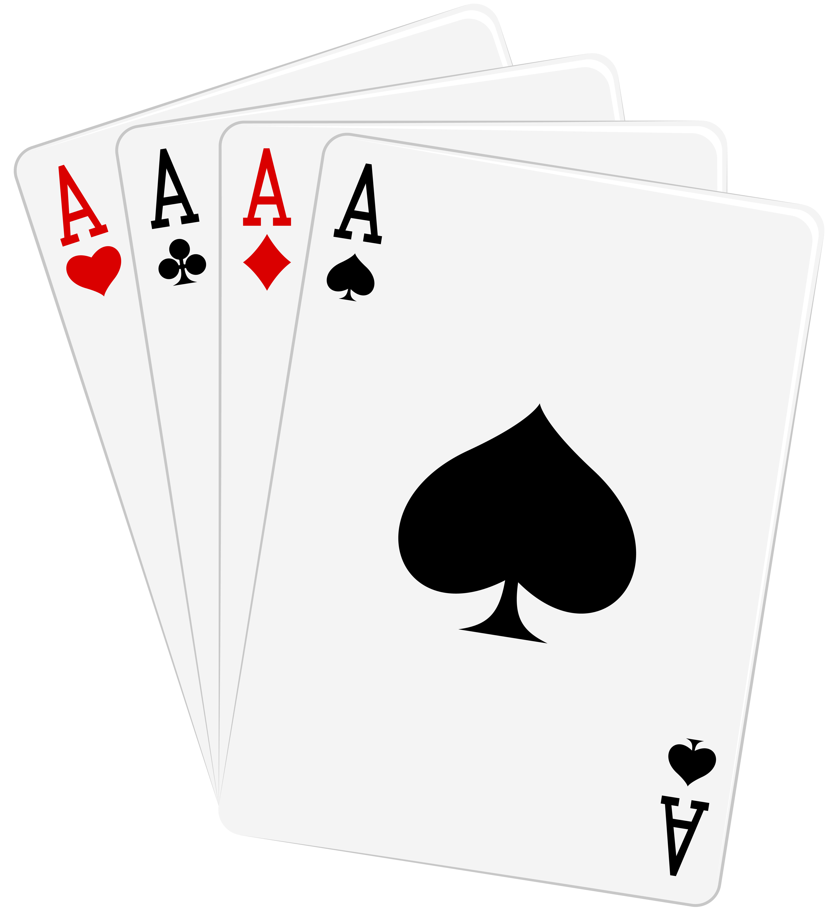

SIETE Y MEDIO
SIETE Y MEDIO
Tutorial del juego
 

OBJETIVO
El objetivo principal del juego es el de ganar la apuesta realizada contra el resto de jugadores.
CONOCIMIENTOS PREVIOS
Cada carta tiene como valor su propio numero, exceptuando la sota, caballo y rey (y 8, 9 y 10 en caso de usar baraja española o de poker), que cuentan como medio punto
DESARROLLO DEL JUEGO
Habrá un máximo de 6 jugadores que se establecerán antes de empezar la partida.
Podrán jugar tanto jugadores humanos como jugadores «máquina»
Se establecerá una baraja de entre las posibles para jugar.
Cada jugador tiene un perfil de riesgo del tipo:
El perfil de un jugador definirá qué cantidad de puntos apuesta en función de los que le quedan, y también lo que arriesgará a la hora de pedir una nueva carta.
Se reparten 1 carta del mazo a cada jugador para establecer prioridades. El jugador que consiga la carta más alta es el que tiene mayor prioridad. En caso de que 2 o más jugadores saquen la carta más alta, la prioridad es:
En caso de jugar una baraja de póker, por ejemplo, la prioridad de las cartas se establecen según los equivalentes a oros, copas, espadas, bastos.
El jugador con mayor prioridad será la banca, y los turnos irán en función de la prioridad, primero el jugador con menor prioridad, luego el siguiente con menor prioridad, y por último la banca.
Cada jugador inicia la partida con 20 puntos.
Habrá un máximo de 30 rondas.
Antes de repartirse ninguna carta, se establecen las apuestas para cada ronda, cada jugador apuesta según su perfil. Hay que tener en cuenta que un jugador nunca apostará más puntos de los que tiene la banca, dado que sería incoherente.
Por turnos, según prioridad, cada jugador en cada ronda:
JUEGA LA BANCA
Una vez hayan hecho las apuestas todos los jugadores, le llega el turno a la banca.
La banca no hace apuestas, simplemente recibe las de los jugadores. Juega como los demás jugadores:
LÓGICA DE PEDIR CARTAS
Cuando un jugador decide pedir una carta, lo hará en función de las cartas que hay repartidas, y lo hará calculando la probabilidad de pasarse si recibiese una nueva carta:
Si esta probabilidad supera el perfil de riesgo del jugador (prudente–30, normal–40, arriesgado-50) se plantará. Salvo en el caso de:
La banca sigue el siguiente criterio:
Siete Y Medio © 2023
Descarga la app en tu sitio habitual